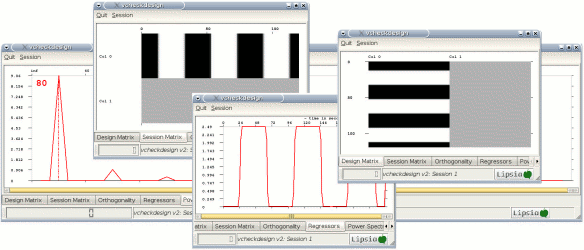
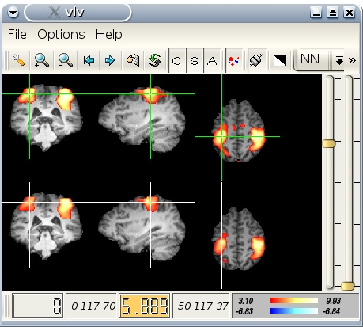
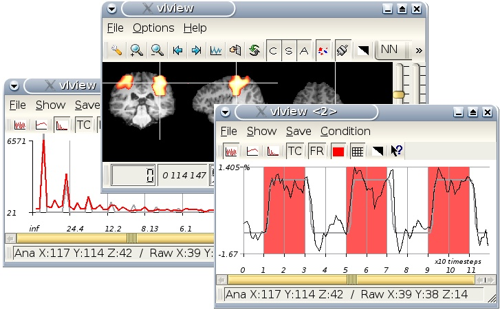

Before doing the statistical evaluation, the experimental design must be written into a
design matrix. In our example design file 'design.txt',
there is only 1 experimental condition which occurs every 80 seconds for a period of 40 seconds
(see section about the design format for more information).
From this text design file, the design matrix can be generated using the program
'vgendesign'.
vgendesign -in design.txt -out design.v -tr 2 -ntimesteps 120
Note that TR (repetition time) and the number of timesteps (scans) must be given when calling
'vgendesign'. In our example, we have a repetition time of
2 seconds and 120 timesteps. The output design matrix 'design.v' can be checked using the program
'vcheckdesign'.
vcheckdesign -in design.v

After generating the design matrix (stored in the vista file 'design.v'), a statistical evaluation
can be performed using the preprocessed functional data
'ptsm_data.v' (see the standard preprocessing pipeline chapter for further informations). Note that statistical tests such as the t-test require
independent observations as input. However, fMRI time series show a certain amount of
autocorrelation which has to be accounted for in the statistical
analysis. There are 2 different approaches for
dealing with the autocorrelation: pre-coloring and whitening. We will show both approaches:
1. Using pre-coloring, a statistical evaluation can be performed using the program
'vcolorglm':
vcolorglm -in ptsm_data.v -out gptsm_data.v -design design.v
The output of 'vcolorglm' is a so-called 'beta-file' which contains
the parameter estimates. Contrasts can be computed using the program
'vgetcontrast'. In our example, we have only 1 experimental condition.
Therefore, the contrast vector is 1 0. The program 'vgetcontrast'
can produce Z-maps, t-maps and contrast images. In our example, we will generate a Z-map:
vgetcontrast -in gptsm_data.v -out zgptsm_data.v
-type zmap -contrast 1 0
2. Using whitening, a statistical evaluation can be performed using the program
'vwhiteglm'. The parameters (betas) and contrasts are computed in one step.
Thus, 'vwhiteglm' produces statistically parametric maps
(Z-, t-, or F-values) or contrast images by specification of a suitable contrast vector.
vwhiteglm -in ptsm_data.v -out zptsm_data.v
-design design.v -type zmap -contrast 1 0
To determine a statistical threshold, voxels outside the brain should be set to zero.
This can be done applying the program 'vbrainmask'
to the Z-map using the preprocessed raw data.
vbrainmask -in zgptsm_data.v -out bzgptsm_data.v -raw ptsm_data.v -minval 2000
For obtaining the statistical threshold, Lipsia offers two approaches:
1. Method of Benjamini and Hochberg: False discovery rate 'vfdr':
vfdr -in bzgptsm_data.v -out FDR_bzgptsm_data.v
For our example data, the program 'vfdr' determines a corrected threshold of Z=2.4
and applies this threshold to the zmap 'bzgptsm_data.v'. The output 'FDR_bzgptsm_data.v' is a thresholded map containing the significant activations.
2. Cluster-size/Cluster-maximum threshold using 'vmulticomp' and 'vdomulticomp':
First do a smoothness estimation using 'vcolorglm' with an
appropriate 'minval'. An appropriate 'minval' depends on the scanner used.
vcolorglm -in ptsm_data.v -out gptsm_data.v -design design.v -minval
2000
grep -a smoothness gptsm_data.v
In our example, the estimated smoothness is 11.5 mm FWHM. Now we can call
'vmulticomp' with this smoothness and an initial threshold which is used to generate
clusers. As an initial threshold, we will use Z=3.09 (p=0.001). Note that Z=2.576 (p=0.005) is also often used.
vmulticomp -in bzgptsm_data.v -out thresholds.0.001.v -fwhm 11.5 -z 3.09
Then, the cluster-size/cluster-maximum thresholds can be applied to the zmap
using the program 'vdomulticomp':
vdomulticomp -in bzgptsm_data.v -out bzgptsm_data_corr.v
-file thresholds.0.001.v -p 0.05
The output shows significant activations in the primary motor area in the left and right hemisphere, and in the SMA.
The results of the statistical evaluation can be displayed using the programs
'vlv' and 'vlview'.
The program 'vlv' can be called with
several parametric maps (e.g. to see both
maps 'zgpts_data.v' and 'zpts_data.v').
vlv -in structural_isotal.v -zmap zgptsm_data.v zptsm_data.v

In contrast to 'vlv', the program 'vlview'
accepts only 1 input and 1 map file. But 'vlview' is able to show the raw data
time course for each voxel. Note that the preprocessed raw data file 'pts_data.v' should be used.
vlview -in structural_isotal.v -zmap zgptsm_data.v -raw ptsm_data.v
The program 'vlview'
additionally accepts the 'beta-file' (output of
'vcolorglm') and the (text) design file 'design.txt'.
vlview -in structural_isotal.v -zmap zgptsm_data.v -raw ptsm_data.v -beta gptsm_data.v -des design.txt
